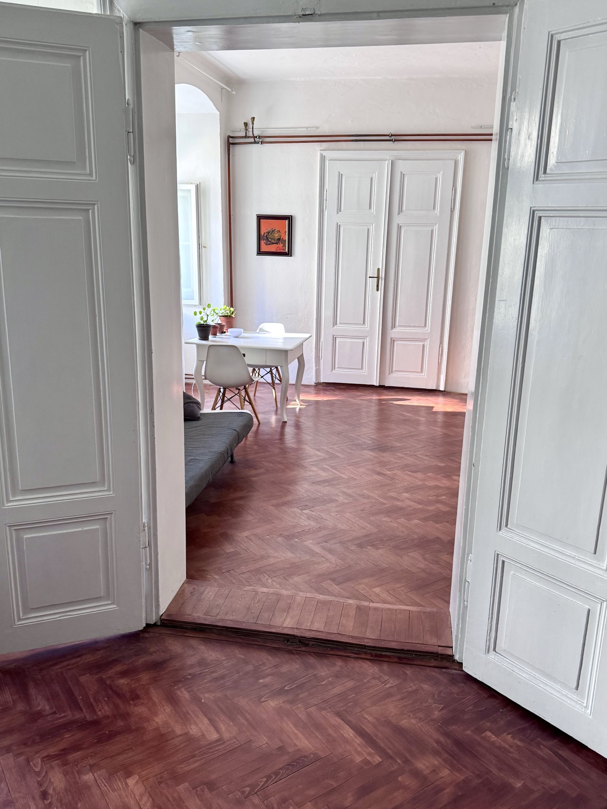
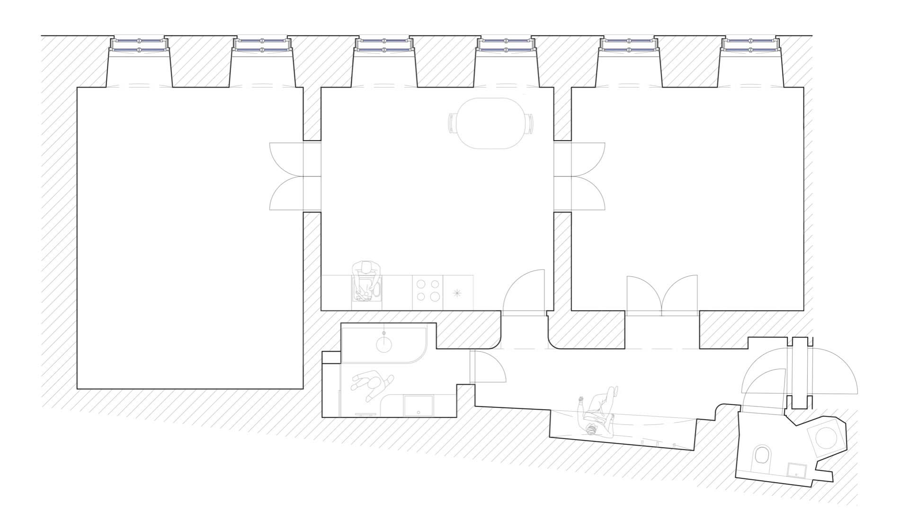

Pronájem v centru Brna
Byt na Novobranské
90 m², 1. patro, 2+1.
Půdorys s úhly pohledu

Co je dobré vědět
Byt je přímo v centru na Novobranské. Na hlavní nádraží je to zhruba 3 minuty pěšky, na autobusové nádraží u Grandu asi minuta. Obchody, služby a MHD jsou hned po ruce.
Uvnitř jsou vysoké stropy, parkety a okna do tiché ulice bez provozu. Dispozice je jednoduchá: první větší neprůchozí pokoj, druhý menší neprůchozí pokoj, kuchyň, koupelna a samostatné WC se sprchovým koutem.
- Výměra
- 90 m²
- Patro
- 1. patro bez výtahu
- Sklep / balkon
- Žádný sklep ani balkon
- Internet
- Přes modem se SIM, bez optiky
- WC
- Samostatné, se sprchovým koutem
- Pro koho
- Nekuřáci, bez zvířat
- Adresa
- Novobranská 20, Brno
Cena
23 000 Kč měsíčně
K tomu energie a služby podle aktuálních záloh a počtu lidí.
- Plyn
- 2 360 Kč
- Elektřina
- 1 180 Kč
- Voda
- 350 Kč / osoba
Lokalita
Novobranská 20, Brno
Centrum bez složité logistiky: vlak, autobus, šaliny i obchody jsou v docházkové vzdálenosti. Dům je kousek od Grandu a hlavního nádraží.